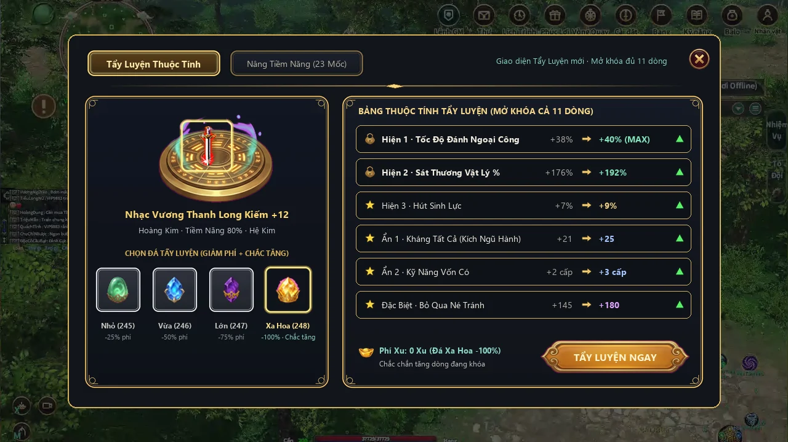

Hướng Dẫn Chức Năng Tẩy Luyện 11 Dòng & Nâng Tiềm Năng
Tẩy Luyện giúp bạn làm mới và đẩy các dòng thuộc tính (Hiện · Ẩn · Đặc Biệt) lên ngưỡng tối đa (MAX), còn Nâng Tiềm Năng nhân thẳng chỉ số nền của món trang bị qua 23 mốc tới 150%.

1. Điểm Đột Phá Của Giao Diện Tẩy Luyện Mới
- Mở khóa trọn vẹn 11 dòng: Bạn có thể khóa bất kỳ dòng nào trong tổng số 11 dòng thuộc tính (Hiện 1–6, Ẩn 1–6, Đặc Biệt) với phí khóa tính tuyến tính minh bạch.
- Bể dòng cực rộng cho từng vị trí: Đủ các dòng giá trị cao như Hút Sinh Lực / Hút Nội Lực, Tốc Độ Đánh, Bỏ Qua Né Tránh, Bỏ Qua Kháng 5 Hệ (áo), Kỹ Năng Môn Phái (25% xuất hiện trên Tọa Kỵ khớp đúng phái!).
2. So Sánh 4 Bậc Đá Tẩy Luyện (ID 245 – 248)
| Loại Đá Tẩy Luyện | Giảm Phí Xu | Hiệu Ứng Đặc Biệt | Nguồn Kiếm Chính |
|---|---|---|---|
Đá Tẩy Luyện Nhỏ (245) | -25% | Tiết kiệm Xu khi tẩy bước đầu | Phó bản, Quái Tím, Tháp |
Đá Tẩy Luyện Vừa (246) | -50% | Tẩy đồ Lam/Tím & Hoàng Kim sớm | Rương Thủy Tặc, Sa Mạc |
Đá Tẩy Luyện Lớn (247) | -75% | Đẩy dòng gần ngưỡng tối đa | Boss Hoàng Kim, Rương Vàng |
Đá Tẩy Luyện Xa Hoa (248) | -100% (0 Xu) | Chắc chắn tăng chỉ số dòng khóa! | Hoa Sơn (+8 viên chuỗi + 1 viên/ngày!) |
Chiến thuật dùng Đá Tẩy Luyện Xa Hoa (248) thông minh
Hãy tẩy thường trước cho tới khi ra được 2–3 dòng cực phẩm (VD: Tốc Đánh, Sát Thương %, Hút Sinh Lực), sau đó khóa những dòng đó lại rồi mới dùng Đá Tẩy Luyện Xa Hoa để vừa không tốn 1 Xu phí khóa, vừa chắc chắn đẩy trị số sát trần!
3. Nâng Tiềm Năng (23 Mốc: 0% → 150%)
Thất Bại KHÔNG BAO GIỜ Tụt Mốc!
Trang bị + Phù Thức Tỉnh Tiềm Năng (240: 1/2/4/12/25) + Hồn Tinh Tiềm Năng (241 Thường / 242 Ưu Lương / 243 Hoàn Mỹ) + Xu
Lưu ý nguồn phôi Tiềm Năng cao: Quái dã ngoại rơi đồ Tiềm Năng 42–60; Boss Hoàng Kim rơi mốc 70 (0.01%) và 80 (0.001%); Boss Thông Thiên Tháp tầng 25+ rơi mốc 90; riêng Boss Mốc Dã Tẩu rớt thẳng đồ Bạch Kim Tiềm Năng MAX 150! Xem bảng chi tiết 9 mốc Tiềm Năng (0→150) & các nhánh hợp thành khác tại Toàn Tập NPC Thợ Rèn.